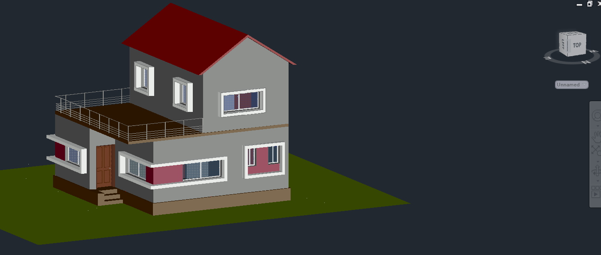
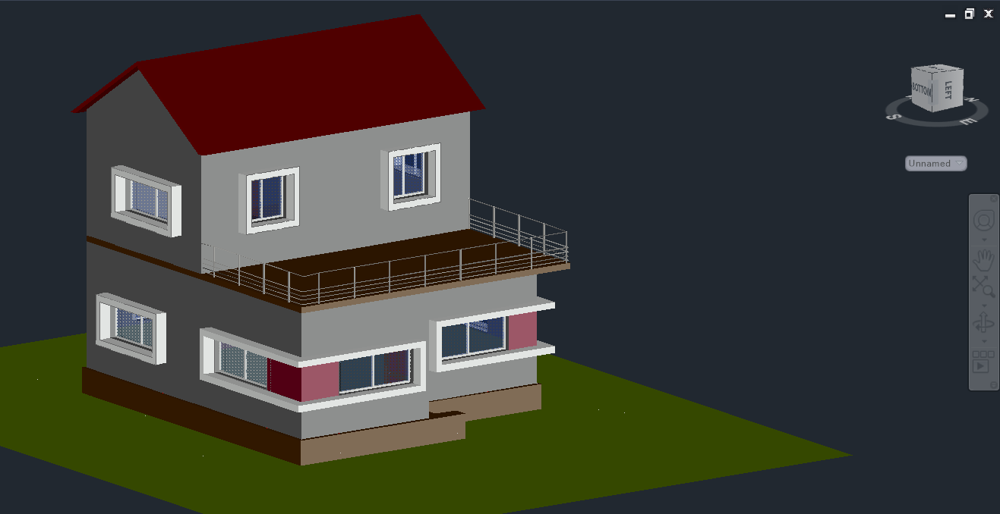
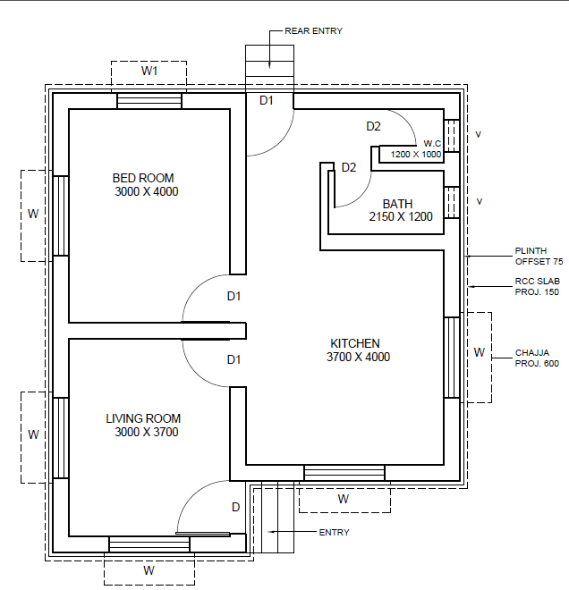
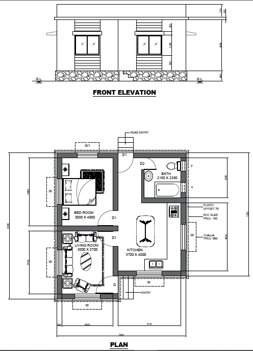
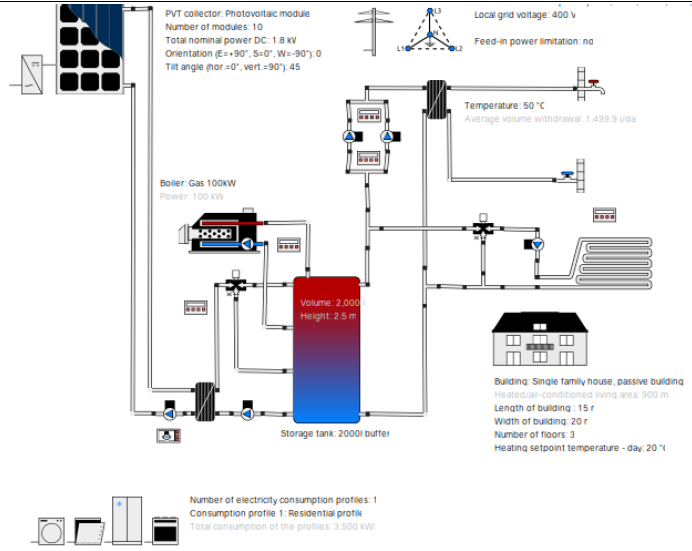
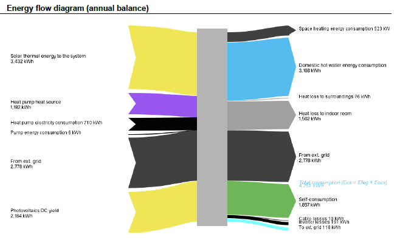
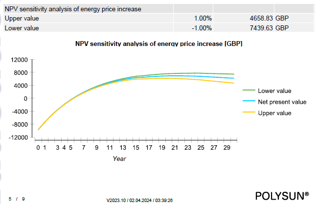

Question 01 — Solar power engineering
Can a house heat itself?
Mostly, yes — if you design it to. This two-bedroom house for south-west London combines passive solar architecture with an active hybrid collector system. Over a simulated year it covers 64.6% of its heating with sunlight, peaking at 90% in summer.
Scroll ↓
Start with the sun, not the boiler.
Before any hardware, the house itself does the work. The design faces its main glazing toward the sun with a calculated roof overhang — shading the windows in summer, admitting low winter light. High thermal-mass floors store daytime heat; passive-standard U-values (walls at 0.123 W/m²K versus 0.54 for a conventional house) keep it in.




Then let the roof earn its keep.
The active system: 7 flat-plate collectors and 10 PV modules feeding a 5 kW heat pump, a 500 L storage tank, and a 6 kWh battery — modelled end to end in Polysun against real Wimbledon irradiance data (1,035 kWh/kWp per year).


Proven against alternatives, not just asserted.
The chosen system was compared in Polysun against the same house without battery storage and against a PVT-preheating variant — on energy deficit, self-consumption, and CO₂ emissions. Storage earned its place: without it, self-consumption collapses and grid dependence rises through the winter months.

The working file, not just the write-up.


Original files
The genuine working files — open them in AutoCAD or Word.
Passive house — full 3D model.dwg · 5 MB Floor plan drawing.dwg · 0.8 MB Full report — Solar Low Carbon Efficient Building.docx · 3 MB